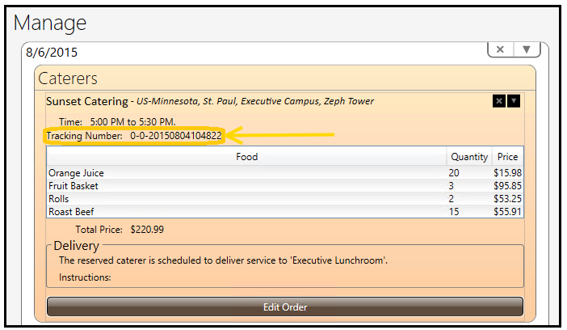
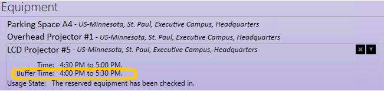

Add Resources
Add Catering
- Select Manage.
- Select add caterer.
- Select next to: Show all, Internal, or External to display desired catering vendor. View menu and additional catering information by selecting the vendor’s name.
Internal
- Select Pickup or Delivery.
- Use the scroll bar from the ‘Catering Order’ window to view all of the food categories and menu items. Select next to food categories to collapse and hide.
- Click and drag the cursor over the “0” next to the desired catering item(s) and enter the quantity of menu items needed. Include additional instructions to catering support crew when internal caterer is selected.
- Select OK.
- Select the delivery destination from the ‘Choose a Destination for Delivery’ window. Select OK to choose default delivery room or create a new reservation to use for delivery. If more than one room is reserved, highlight and select the room at which the order should be delivered.
- Select Save & Close.
Note: Once catering is selected from the Catering tab, the room will automatically be reserved as well.
Note: Organizations may identify catering reservation cut-off hours before a meeting. Users will not be able to reserve catering within the set cut-off time.
Note: Delivery time automatically defaults to the meeting start time.
Note: Meeting Planner generates a notification to catering support crews and the reservation owner indicating the meeting room, delivery time, date, and catering order.
Internal Catering Order Tracking Number
Once an internal catering order has been created, a unique tracking order number is assigned. Tracking numbers may be useful to identify a particular order and for reporting purposes.
To view the catering tracking number:
- Select Manage.
- Select the catering order.
- View the tracking number.

External
User launches into external catering website.
Note: External catering must be arranged by contacting the external vendor.
Add Equipment
- Select Manage.
- Select add equipment.
- Use the scroll bar on the right side of the ‘Reservation’ window for the full list of available portable equipment. View equipment description by clicking on the portable equipment name.
- Select Reserve (to check-in/out equipment) or Delivery next to the desired portable equipment.
- Include additional Notes (if desired) to facility support crew when Delivery option is selected.
- Select Save & Close.
Note: Organizations may identify portable equipment reservation cut-off hours before a meeting. Users will not be able to reserve meetings with portable equipment within the set cut-off time.
Note: Meeting Planner automatically generates a notification to equipment support crews and the reservation owner indicating the meeting room, time, date, and portable equipment reservation order.
Note: Typically, organizations attach buffer times to both ends of a meeting that includes portable equipment reservation. Reservation buffer times will be viewed in the equipment description of MP6 and other MP applications.

Add Room
- Select Manage.
- Select add room .
- Enter search parameter criteria.
- Use the scroll bar on the right side of the ‘Reservation’ window and Reserve the desired room to add to the reservation. Add room setup, equipment, catering, etc., reservation to attach to the added room.
- Select Save & Close.